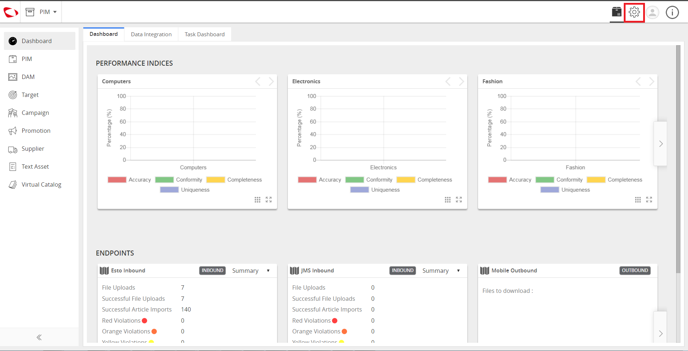

Manage Outbound Endpoints¶
Manage Outbound Endpoint is an administrator feature that manages Outbound Endpoints on the Partner Engagement Platform so that the endpoint can be used for exporting data.
| Description: |
|
| Related topics: | |
| Application: |
|
How to do: Create Outbound Endpoints¶
To do this, follow these steps:
# Click Administration.
# Click Data integration tab, click on the ‘endpoints’ section to the left. To create a endpoint, click on create icon (plus) on right side of the window. .. image:: /feature/_images/mdmimages/cs_manageoutboundendpoints_datainteg.PNG | |
# Fill-in the details (Name ,code, type of Endpoint) and select the outbound endpoint to and then click the create button to create an endpoint. .. image:: /feature/_images/mdmimages/cs_manageoutboundendpoints_enterdetails.PNG | |
# Select the process in the endpoint for off-boarding data. .. image:: /feature/_images/mdmimages/cs_manageoutboundendpoints_datainteg.PNG | |
# Go to ‘All/Explore’ in PIM and then select the ‘articles’ to be exported with the export button. .. image:: /feature/_images/mdmimages/cs_manageoutboundendpoints_clickexplore.PNG | |
# Next, select the endpoint from which data has to be off-boarded. .. image:: /feature/_images/mdmimages/cs_manageoutboundendpoints_clickexplore.PNG | |